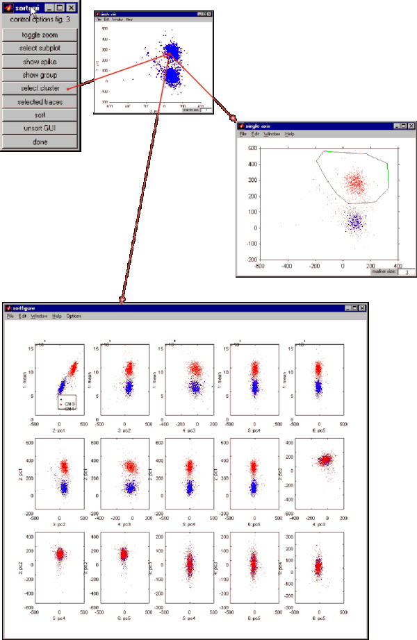

| A third option allows you to view the distribution of a set of spikes
in different projections. Again, encircle a group of dots by clicking the
vertices of a polygon. The dots will be marked red in all subplots. Clicking
on 'selected traces' will show the waveforms for all dots marked.
Be aware that this may consume a lot of memory and CPU time for large clusters,
which is the reason why I separated this function from the 'show clusters'
option. |
|
| Again, once you have selected a spike population the 'sort'
button will assign a clusternumber and a subpopulation name to them. See
the messages in the command window for the values assigned.
Please check the specific help functions for further details and have
a look at the tooltips associated with some of the functions. |
Next:
Spike sorting 5/5 - unsorting |
 |